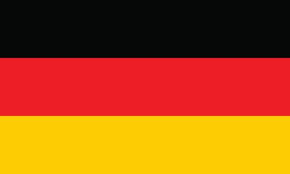

KRISTOFFERSSON MOTORSPORT
06-12-1988 (35 yaşında)
isveç
HANSEN WORLD RX TEAM
21-05-1992 (31 yaşında)
isveç
MUNNICH MOTORSPORT
06-05-1977 (46 yaşında)
Almanya
GRX-SET WORLD RX TEAM
20-05-1996 (27 yaşında)
Finlandiya
HYUNDAI MOTORSPORT
17-06-1996 (27 yaşında)
Norveç
GUSTAV BERGSTRÖM
17-12-2002 (21 yaşında)
???
???
29-02-2000 (23 yaşında)
İsveç
???
09-12-1992 (31 yaşında)
İsveç
GUERLAIN CHICHERIT
20-05-1978 (45 yaşında)
Fransa
| 2023 WORLD RALLY CROSS YARIŞ PROGRAMI |
|
|---|---|
| ETKİNLİK | TARİH |
 MONTALEGRE MONTALEGRE |
04 * HAZİRAN 03:00 |
 LANKEBANEN LANKEBANEN |
18 * HAZİRAN 03:00 |
 HOLJES HOLJES |
02 * TEMMUZ 03:00 |
 LYDDEN LYDDEN |
23 * TEMMUZ 03:00 |
 METTET METTET |
23 * TEMMUZ 03:00 |
| ESTERİNG | İPTAL EDİLDİ |
 HONG KONG HONG KONG |
11 * KASIM 19:00 |
FIA, Dünya Rallycross Şampiyonası'nın geleceğini güvence altına almayı taahhüt etmesinin ardından seri için yeni bir organizatör bulmak için bir ihale süreci başlattı. Motorsport.com geçtiğimiz hafta, World RX ticari haklar sahibi IMG'nin, FIA tarafından resmi olarak onaylanan mevcut kampanyanın sonunda seriden uzaklaşacağını açıklamıştı. Yönetim organı, ”Duyuru, IMG ile FIA arasındaki tartışmaların gidişatına göre ilerliyor. IMG, 2021 ve 2022'de Dünya RX organizatörü olarak devam etmeme arzusunu dile getirdi. FIA ve IMG arasındaki tartışmalar devam ediyor. FIA, şampiyonanın devam eden başarısını sağlamaya devam ediyor.” şeklinde açıklamada bulundu.
Yenilenen Dünya Rallikros Şampiyonası takviminin Portekiz ayağı iptal edildi. Montalegre şehrindeki Vila Real etkinliğinin, yenilenen 2020 takviminde 10-11 Ekim tarihlerinde yapılması planlanıyordu. Spa'da yapılacak olan Belçika ayağının geçen ay itibariyle Kasım sonuna ertelenmesinin ardından şampiyonanın Portekiz ayağı, bu hafta sonu yapılacak Letonya ayağından sonraki yarış olacaktı. Portekiz organizasyonunu düzenleyen Montalegre Belediyesi, geçtiğimiz ay yaptığı açıklamada yarışın kapalı kapılar ardında yapılacağını söylemiş olsa da Portekiz'de artış gösteren koronavirüs vakaları sebebiyle an itibariyle organizasyon iptal edildi.
DiRT Rally 2.0 oyun direktörü Ross Gowing, “Spor dünyasının büyük bölümünün mücadele edememesi sebebiyle, oyun topluluğunun bu zamanlarda rahatlama sağlayan sanal turnuvalar için bir araya geldiğini görmek harika.” “RX Esport Invitational’ın bir parçası olduğumuz için heyecanlıyız ve profesyonel sürücüler ile taraftarları DiRT Rally 2.0’da görmek için sabırsızlanıyoruz.” dedi. Bir önceki DiRT Espor etkinliği, 2020 Autosport International’da gerçekleştirilmiş ve 10 bin dolar ödül havuzuna sahipti. Motorsport Games CEO’su Dmitry Kozko, “FIA Dünya Rallikros Şampiyonası ile kurulan bu ortaklık, Motorsport Games’in, hak sahiplerinin bu zor zamanlarda taraftarlarla etkileşime geçme konusundaki adanmışlığının başka bir kanıtı.” “Bu ayrıca, Codemasters ile olan mükemmel ilişkimizin de devamı.” “Kendi sınıfımızın en iyi Espor teknolojisini ve rekabet yönetimi uzmanlığımızı, gerçek WRX sürücüleri ve yorumlama yetenekleriyle birleştirmek, taraftarlara heyecanlı bir gösteri sunacak.” “Çevrimiçi yarışçıların da yer alabilmesi ve kahramanlarına karşı yarışabilmeleri, taraftar etkileşimini bir sonraki seviyeye taşıyor. Bu, harika bir gösteri olacak.” dedi.